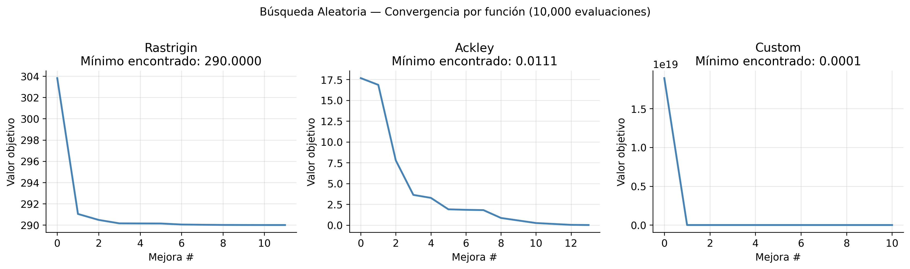
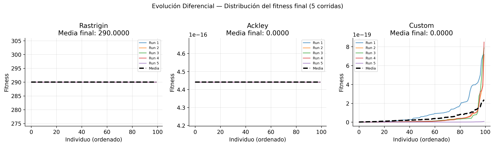
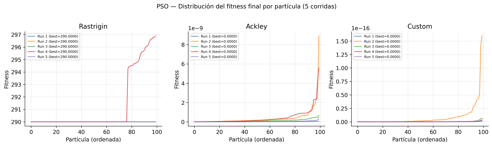
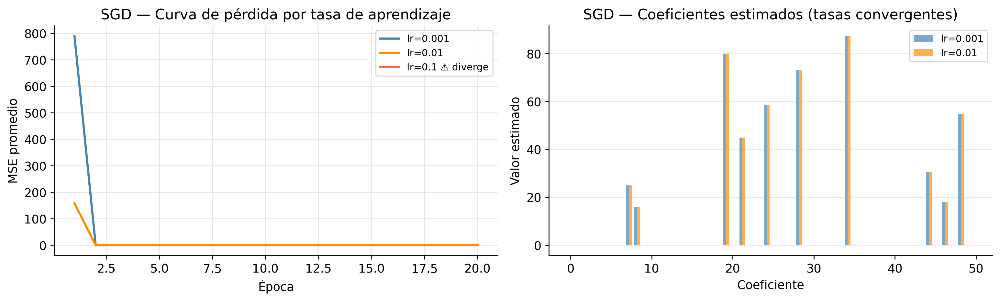
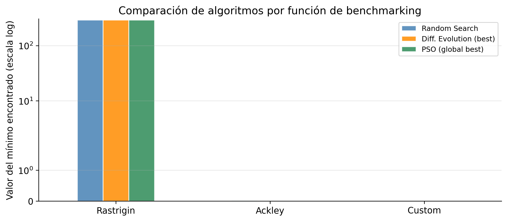

import numpy as np
import matplotlib.pyplot as plt
import pandas as pd
from sklearn.utils import check_random_state, check_X_y, shuffle
from sklearn.neighbors import KNeighborsClassifier
from sklearn import datasets
import time
import warnings
warnings.filterwarnings('ignore')
plt.rcParams.update({
'figure.dpi': 120,
'axes.spines.top': False,
'axes.spines.right': False,
'font.size': 11
})
np.random.seed(42)
# --- Funciones objetivo de benchmarking ---
fo_rastrigin = lambda x: 300 + sum(x[i]**2 - 10*np.cos(2*np.pi*x[i]) for i in range(len(x)))
fo_ackley = lambda x: (
-20 * np.exp(-0.2 * np.sqrt((1/len(x)) * sum(x[i]**2 for i in range(len(x)))))
- np.exp((1/len(x)) * sum(np.cos(2*np.pi*x[i]) for i in range(len(x))))
+ 20 + np.exp(1)
)
fo_custom = lambda x: sum(
(sum((10+j) * (x[j]**i - 1/(j**i)) for j in range(1, len(x))))**2
for i in range(1, 10)
)
BENCHMARK_FUNCTIONS = {
'Rastrigin': (fo_rastrigin, 1, -5.12, 5.12),
'Ackley' : (fo_ackley, 1, -32.768, 32.768),
'Custom' : (fo_custom, 2, -10.0, 10.0),
}Introducción
Imagina que tienes que encontrar el punto más bajo de un paisaje montañoso sin poder ver el mapa completo — solo puedes muestrear posiciones una a una. Ese es, en esencia, el problema que resuelve la optimización estocástica.
A diferencia de los métodos clásicos de gradiente, que asumen una función suave y convexa, los algoritmos estocásticos usan aleatoriedad controlada para explorar espacios de búsqueda donde el gradiente no existe, no es práctico de calcular, o donde el paisaje tiene tantos mínimos locales que el gradiente simplemente te atrapa en el primero que encuentra.
Esto los hace especialmente útiles cuando:
- La función objetivo tiene múltiples mínimos locales (no convexa)
- El espacio de búsqueda es de alta dimensión
- No se dispone del gradiente de la función objetivo
En este tutorial implementamos cuatro algoritmos desde cero — sin librerías de optimización — y los comparamos directamente sobre tres funciones de benchmarking clásicas de la literatura:
| Algoritmo | Tipo | Idea central |
|---|---|---|
| Búsqueda Aleatoria | Exploración pura | Muestra candidatos al azar y guarda el mejor |
| Evolución Diferencial | Evolutivo | Cruza y muta vectores de una población |
| PSO | Basado en enjambres | Partículas guiadas por memoria individual y colectiva |
| Gradiente Estocástico | Basado en gradiente | Actualiza parámetros con un ejemplo a la vez |
Las funciones de prueba
Antes de implementar cualquier algoritmo necesitamos funciones de prueba con propiedades conocidas — de modo que podamos medir objetivamente qué tan cerca llega cada método del óptimo real. Las tres que usamos aquí son estándar en la literatura de optimización metaheurística:
a) Función de Rastrigin — Altamente multimodal, muchos mínimos locales: \[\min\; 300 + \sum_{i}\left(x_i^2 - 10\cos(2\pi x_i)\right), \quad x_i \in [-5.12,\; 5.12]\]
b) Función de Ackley — Un mínimo global rodeado de mínimos locales: \[\min\; -20\exp\!\left(-0.2\sqrt{\tfrac{1}{n}\textstyle\sum x_i^2}\right) - \exp\!\left(\tfrac{1}{n}\textstyle\sum\cos(2\pi x_i)\right) + 20 + e, \quad x_i \in [-32.768,\; 32.768]\]
c) Función personalizada — Combina dos índices con una estructura no separable que la hace más difícil que las anteriores: \[\min\; \sum_{i=1}^{10}\left(\sum_{j=1}^{d}(10+j)\left(x_j^i - \tfrac{1}{j^i}\right)\right)^2, \quad x_i \in [-10,\; 10]\]
Setup
Parte 1 — Búsqueda Aleatoria
Empezamos con el algoritmo más básico posible: la Búsqueda Aleatoria (Random Search). La idea es directa — genera candidatos uniformemente al azar dentro de los límites del dominio y guarda el mejor que encuentras.
¿Por qué empezar aquí? Porque este es el baseline. Cualquier algoritmo más sofisticado debe superar esta referencia para justificar su complejidad adicional. Si la búsqueda aleatoria ya resuelve bien tu problema, no necesitas nada más elaborado.
Complejidad: O(T · n) donde T es el número de evaluaciones y n las dimensiones.
def random_search(fun, n_dim, lower_bound=0, upper_bound=1,
max_iters=1000, random_state=None):
"""Búsqueda aleatoria pura.
Parámetros
----------
fun : función objetivo a minimizar
n_dim : número de variables
lower_bound : límite inferior (escalar o array)
upper_bound : límite superior (escalar o array)
max_iters : número de evaluaciones de la función objetivo
random_state : semilla para reproducibilidad
Retorna
-------
best_val : mejor valor encontrado
best_sol : solución correspondiente
path : historial de mejoras
"""
rng = check_random_state(random_state)
best_val = np.inf
best_sol = None
path = []
for _ in range(max_iters):
candidate = rng.uniform(low=lower_bound, high=upper_bound, size=n_dim)
val = fun(candidate)
if val < best_val:
best_val = val
best_sol = candidate
path.append(best_val)
return best_val, best_sol, path¿Cómo converge sobre cada función?
Corremos 10,000 evaluaciones sobre cada función y graficamos únicamente los momentos en que se encontró una solución mejor — así vemos la curva de mejora, no la actividad total del algoritmo.
fig, axes = plt.subplots(1, 3, figsize=(14, 4))
for ax, (name, (fun, n_dim, lb, ub)) in zip(axes, BENCHMARK_FUNCTIONS.items()):
val, sol, path = random_search(fun, n_dim, lb, ub, max_iters=10_000, random_state=42)
ax.plot(path, color='steelblue', linewidth=2)
ax.set_title(f'{name}\nMínimo encontrado: {val:.4f}')
ax.set_xlabel('Mejora #')
ax.set_ylabel('Valor objetivo')
ax.grid(True, alpha=0.3)
plt.suptitle('Búsqueda Aleatoria — Convergencia por función (10,000 evaluaciones)',
y=1.02, fontsize=12)
plt.tight_layout()
plt.savefig('thumbnail.png', bbox_inches='tight', dpi=150)
plt.show()
Nota que las mejoras ocurren cada vez con menor frecuencia conforme avanza la búsqueda — es esperable, ya que el espacio explorado se satura. La función Custom es la que más le cuesta al algoritmo: con dos dimensiones y estructura no separable, encontrar mejoras al azar se vuelve progresivamente difícil.
print("Búsqueda Aleatoria — Resumen")
print("=" * 50)
for name, (fun, n_dim, lb, ub) in BENCHMARK_FUNCTIONS.items():
val, sol, path = random_search(fun, n_dim, lb, ub, max_iters=10_000, random_state=42)
print(f"{name:12s}: mínimo = {val:.6f} | pasos hasta convergencia = {len(path)}")Búsqueda Aleatoria — Resumen
==================================================
Rastrigin : mínimo = 290.000035 | pasos hasta convergencia = 12
Ackley : mínimo = 0.011135 | pasos hasta convergencia = 14
Custom : mínimo = 0.000087 | pasos hasta convergencia = 11Parte 2 — Evolución Diferencial (DE/Rand/1/bin)
La Evolución Diferencial da un salto importante respecto a la búsqueda aleatoria: en lugar de muestrear candidatos independientes, mantiene una población de soluciones que evolucionan juntas. La información de toda la población se usa para generar candidatos más prometedores.
La idea central es elegante: para desafiar a cada individuo, construye un vector de prueba combinando tres miembros elegidos al azar de la población:
- Mutación:
v = r1 + F · (r2 − r3)— el vector r1 se perturba en la dirección de la diferencia entre r2 y r3 - Cruza: mezcla el individuo actual con
vgen a gen, según la tasa CR - Selección: el que tenga menor valor objetivo — el individuo original o el vector de prueba — pasa a la siguiente generación
Los parámetros clave son el peso diferencial F (qué tan grande es el paso de mutación) y la tasa de cruza CR (qué proporción de genes se mezclan). Los valores estándar F=0.5 y CR=0.5 son un buen punto de partida.
def differential_evolution(fun, n_dim, lower_bound=0, upper_bound=1,
population_size=100, CR=0.5, F=0.5,
max_iters=100, random_state=None):
"""Evolución Diferencial — variante DE/Rand/1/bin.
Parámetros
----------
population_size : número de individuos en la población
CR : tasa de cruza binomial [0, 1]
F : peso diferencial (escala de mutación) [0, 2]
"""
rng = check_random_state(random_state)
# Población inicial normalizada a [0, 1], luego escalada al dominio
population = rng.uniform(size=(population_size, n_dim))
fit = np.array([fun((upper_bound - lower_bound) * ind + lower_bound)
for ind in population])
for _ in range(max_iters):
r1, r2, r3 = np.argsort(
rng.uniform(size=(population_size, population_size))
).T[:3]
# Vector de prueba con mutación direccional
trial = np.clip(population[r1] + F * (population[r2] - population[r3]), 0, 1)
# Cruza binomial
cross_mask = rng.uniform(size=(population_size, n_dim)) < CR
# Garantizar al menos un gen cruzado
forced = ~cross_mask.any(axis=1)
if forced.any():
cross_mask[forced, rng.randint(n_dim, size=forced.sum())] = True
offspring = population.copy()
offspring[cross_mask] = trial[cross_mask]
fit_offspring = np.array([fun((upper_bound - lower_bound) * ind + lower_bound)
for ind in offspring])
# Selección greedy
better = fit_offspring < fit
population[better] = offspring[better]
fit = np.where(better, fit_offspring, fit)
return (upper_bound - lower_bound) * population + lower_bound, fit
def run_multiple(fun_call, n_runs=5, random_state=42):
"""Ejecuta un algoritmo n_runs veces y devuelve los resultados."""
rng = np.random.RandomState(random_state)
return [fun_call(seed=rng.randint(1000)) for _ in range(n_runs)]¿Es consistente entre corridas independientes?
Para evaluar un algoritmo estocástico, una sola corrida no es suficiente — los resultados varían según la semilla aleatoria. Corremos DE cinco veces por función con semillas distintas y graficamos la distribución del fitness final de toda la población. La línea punteada negra muestra la media entre corridas.
fig, axes = plt.subplots(1, 3, figsize=(14, 4))
colors = ['#1f77b4', '#ff7f0e', '#2ca02c', '#d62728', '#9467bd']
for ax, (name, (fun, n_dim, lb, ub)) in zip(axes, BENCHMARK_FUNCTIONS.items()):
results = [
differential_evolution(fun, n_dim, lb, ub, 100, 0.5, 0.5, 100, random_state=s)
for s in range(5)
]
for i, (_, fit) in enumerate(results):
ax.plot(np.sort(fit), color=colors[i], alpha=0.7, linewidth=1.5,
label=f'Run {i+1}')
mean_fit = np.mean([r[1] for r in results], axis=0)
ax.plot(np.sort(mean_fit), color='black', linewidth=2.5,
linestyle='--', label='Media')
ax.set_title(f'{name}\nMedia final: {np.mean(mean_fit):.4f}')
ax.set_xlabel('Individuo (ordenado)')
ax.set_ylabel('Fitness')
ax.grid(True, alpha=0.3)
ax.legend(fontsize=7)
plt.suptitle('Evolución Diferencial — Distribución del fitness final (5 corridas)',
y=1.02, fontsize=12)
plt.tight_layout()
plt.show()
Parte 3 — Optimización por Enjambre de Partículas (PSO)
El PSO se inspira en algo que todos hemos visto: una bandada de aves o un banco de peces que se mueven de forma coordinada sin necesidad de un líder central. Cada individuo sigue reglas simples — y del comportamiento colectivo emerge una búsqueda eficiente.
Técnicamente, cada partícula tiene una posición y una velocidad. La velocidad se actualiza en cada paso combinando tres influencias:
\[v_{t+1} = \omega \cdot v_t + c_1 r_1 (p_{best} - x_t) + c_2 r_2 (n_{best} - x_t)\] \[x_{t+1} = x_t + v_{t+1}\]
- ω · vₜ — inercia: la partícula tiende a seguir moviéndose en su dirección actual
- c₁ r₁ (p_best − xₜ) — componente cognitivo: atracción hacia el mejor punto que ella misma ha visitado
- c₂ r₂ (n_best − xₜ) — componente social: atracción hacia el mejor punto que encontró su vecindario
El balance entre estos tres términos determina si el enjambre explora (diversidad) o explota (convergencia).
def pso(fun, n_dim, lower_bound=0, upper_bound=1,
swarm_size=100, inertia_weight=0.5, c1=1.0, c2=1.0,
max_iters=100, random_state=None):
"""Optimización por Enjambre de Partículas (PSO).
Parámetros
----------
swarm_size : número de partículas
inertia_weight : ω — controla la inercia de la velocidad
c1 : componente cognitivo (atracción al mejor personal)
c2 : componente social (atracción al mejor del vecindario)
"""
rng = check_random_state(random_state)
swarm_pos = rng.uniform(size=(swarm_size, n_dim))
swarm_vel = np.zeros((swarm_size, n_dim))
fit = np.array([fun((upper_bound - lower_bound) * p + lower_bound)
for p in swarm_pos])
personal_best = {'pos': swarm_pos.copy(), 'fit': fit.copy()}
neighborhood = np.argsort(rng.uniform(size=(swarm_size, swarm_size)))[:, :5]
global_best = {'pos': swarm_pos[fit.argmin()].copy(), 'fit': fit.min()}
for _ in range(max_iters):
nbest_idx = fit[neighborhood].argmin(axis=1)
nbest_pos = swarm_pos[neighborhood[np.arange(swarm_size), nbest_idx]]
swarm_vel = (inertia_weight * swarm_vel
+ c1 * rng.uniform() * (personal_best['pos'] - swarm_pos)
+ c2 * rng.uniform() * (nbest_pos - swarm_pos))
swarm_pos = np.clip(swarm_pos + swarm_vel, 0, 1)
fit = np.array([fun((upper_bound - lower_bound) * p + lower_bound)
for p in swarm_pos])
improved = fit < personal_best['fit']
personal_best['pos'][improved] = swarm_pos[improved]
personal_best['fit'][improved] = fit[improved]
if fit.min() < global_best['fit']:
global_best = {'pos': swarm_pos[fit.argmin()].copy(), 'fit': fit.min()}
final_pos = (upper_bound - lower_bound) * swarm_pos + lower_bound
global_best['pos'] = global_best['pos'] * (upper_bound - lower_bound) + lower_bound
return final_pos, fit, global_bestEstabilidad del enjambre en distintas corridas
Repetimos el mismo análisis que con DE: cinco corridas independientes por función. Observa si las corridas del PSO son más o menos dispersas que las de DE — eso te dice qué algoritmo es más sensible a la semilla aleatoria.
fig, axes = plt.subplots(1, 3, figsize=(14, 4))
for ax, (name, (fun, n_dim, lb, ub)) in zip(axes, BENCHMARK_FUNCTIONS.items()):
results = [
pso(fun, n_dim, lb, ub, 100, 0.5, 1, 1, 100, random_state=s)
for s in range(5)
]
for i, (_, fit, gb) in enumerate(results):
ax.plot(np.sort(fit), color=colors[i], alpha=0.7, linewidth=1.5,
label=f'Run {i+1} (best={gb["fit"]:.4f})')
ax.set_title(f'{name}')
ax.set_xlabel('Partícula (ordenada)')
ax.set_ylabel('Fitness')
ax.legend(fontsize=7)
ax.grid(True, alpha=0.3)
plt.suptitle('PSO — Distribución del fitness final por partícula (5 corridas)',
y=1.02, fontsize=12)
plt.tight_layout()
plt.show()
Parte 4 — Gradiente Estocástico (SGD)
El Gradiente Estocástico es diferente en naturaleza a los tres algoritmos anteriores: no minimiza una función analítica sobre un dominio continuo, sino que aprende desde datos. Lo incluimos aquí porque comparte la filosofía de usar aleatoriedad para hacer la optimización más manejable.
La diferencia clave respecto al gradiente batch: en lugar de calcular el error sobre todos los ejemplos del dataset antes de actualizar los pesos, el SGD actualiza con un solo ejemplo a la vez:
\[\theta_{t+1} = \theta_t - \eta \cdot \nabla_\theta \mathcal{L}(\theta_t;\; x_i, y_i)\]
Esto introduce ruido en las actualizaciones —el gradiente de un solo ejemplo no es igual al gradiente promedio— pero hace que cada paso sea mucho más barato computacionalmente. Para datasets grandes, esta compensación vale completamente la pena.
El hiperparámetro que más importa es η, la tasa de aprendizaje. Demasiado pequeña y el entrenamiento es lento; demasiado grande y el algoritmo diverge.
def stochastic_gradient(X, y, learning_rate=0.001, max_iters=100, random_state=None):
"""Regresión lineal con gradiente estocástico.
Parámetros
----------
learning_rate : η — paso de actualización. Demasiado grande → divergencia.
max_iters : número de épocas (pasadas completas por el dataset)
"""
rng = check_random_state(random_state)
X, y = check_X_y(X, y)
intercept = 0.0
omega = np.zeros(X.shape[1])
loss_history = []
for epoch in range(max_iters):
X, y = shuffle(X, y, random_state=rng)
epoch_loss = 0.0
for x_i, y_i in zip(X, y):
residual = y_i - intercept - np.dot(omega, x_i)
grad_intercept = -2 * residual
grad_omega = -2 * residual * x_i
intercept -= learning_rate * grad_intercept
omega -= learning_rate * grad_omega
epoch_loss += residual**2
loss_history.append(epoch_loss / len(y))
# Detener si hay divergencia numérica
if not np.isfinite(epoch_loss):
loss_history.append(np.nan)
break
return omega, intercept, loss_history¿Qué pasa cuando η es demasiado grande?
Vamos a probar tres tasas de aprendizaje para ver el efecto directamente. Antes de correr el SGD, normalizamos las variables de entrada — un paso que parece técnico pero que veremos que es crítico para la estabilidad.
# Dataset sintético: 10,000 muestras, 50 características
X, y = datasets.make_regression(n_samples=10_000, n_features=50,
noise=0.1, random_state=42)
# Normalizar X — crítico para la estabilidad del SGD
X_mean, X_std = X.mean(axis=0), X.std(axis=0)
X_norm = (X - X_mean) / X_std
learning_rates = [0.001, 0.01, 0.1]
results_sgd = {}
for lr in learning_rates:
start = time.time()
omega, intercept, loss_hist = stochastic_gradient(
X_norm, y, learning_rate=lr, max_iters=20, random_state=42
)
elapsed = time.time() - start
results_sgd[lr] = {'omega': omega, 'intercept': intercept,
'loss': loss_hist, 'time': elapsed}
status = 'DIVERGE' if any(np.isnan(loss_hist)) else f'Loss final: {loss_hist[-1]:.4f}'
print(f"lr={lr:.3f} | Tiempo: {elapsed:.1f}s | {status}")lr=0.001 | Tiempo: 0.7s | Loss final: 0.0106
lr=0.010 | Tiempo: 0.7s | Loss final: 0.0207
lr=0.100 | Tiempo: 0.0s | DIVERGEfig, axes = plt.subplots(1, 2, figsize=(13, 4))
palette = {'0.001': 'steelblue', '0.01': 'darkorange', '0.1': 'tomato'}
# Curvas de pérdida
for lr, res in results_sgd.items():
loss = [l for l in res['loss'] if np.isfinite(l)]
label = f'lr={lr}' + (' ⚠ diverge' if any(np.isnan(res['loss'])) else '')
axes[0].plot(range(1, len(loss)+1), loss,
label=label, color=palette[str(lr)], linewidth=2)
axes[0].set_xlabel('Época')
axes[0].set_ylabel('MSE promedio')
axes[0].set_title('SGD — Curva de pérdida por tasa de aprendizaje')
axes[0].legend(fontsize=9)
axes[0].grid(True, alpha=0.3)
# Comparación de coeficientes (tasas que convergen)
valid_lrs = [lr for lr, r in results_sgd.items()
if not any(np.isnan(r['loss']))]
x = np.arange(50)
width = 0.35
for i, lr in enumerate(valid_lrs):
axes[1].bar(x + i*width, results_sgd[lr]['omega'],
width, alpha=0.7, label=f'lr={lr}',
color=palette[str(lr)])
axes[1].set_xlabel('Coeficiente')
axes[1].set_ylabel('Valor estimado')
axes[1].set_title('SGD — Coeficientes estimados (tasas convergentes)')
axes[1].legend(fontsize=9)
axes[1].grid(True, alpha=0.3, axis='y')
plt.tight_layout()
plt.show()
Warning
¿Por qué diverge lr=0.1? Con una tasa de aprendizaje grande, el gradiente actualiza los pesos con pasos que sobrepasan el mínimo — el error crece en lugar de decrecer. Esto produce overflow numérico (valores NaN). La solución es: (1) usar una tasa más pequeña, (2) normalizar las variables de entrada (como hacemos aquí), o (3) implementar una estrategia de learning rate decay.
Resumen comparativo
Ya tenemos los tres algoritmos metaheurísticos calibrados sobre las mismas funciones. Ahora los comparamos directamente: mismo presupuesto computacional, mismas funciones, misma semilla.
summary = {}
for name, (fun, n_dim, lb, ub) in BENCHMARK_FUNCTIONS.items():
rs_val, _, rs_path = random_search(fun, n_dim, lb, ub, 10_000, random_state=42)
de_pop, de_fit = differential_evolution(fun, n_dim, lb, ub, 100, 0.5, 0.5, 100, random_state=42)
_, pso_fit, pso_gb = pso(fun, n_dim, lb, ub, 100, 0.5, 1, 1, 100, random_state=42)
summary[name] = {
'Random Search' : rs_val,
'Diff. Evolution (best)' : de_fit.min(),
'PSO (global best)' : pso_gb['fit'],
}
df_summary = pd.DataFrame(summary).T
print(df_summary.round(6).to_string()) Random Search Diff. Evolution (best) PSO (global best)
Rastrigin 290.000035 290.0 290.0
Ackley 0.011135 0.0 0.0
Custom 0.000087 0.0 0.0fig, ax = plt.subplots(figsize=(9, 4))
df_summary.plot(kind='bar', ax=ax, color=['steelblue', 'darkorange', 'seagreen'],
alpha=0.85, edgecolor='white')
ax.set_ylabel('Valor del mínimo encontrado (escala log)')
ax.set_yscale('symlog')
ax.set_title('Comparación de algoritmos por función de benchmarking')
ax.set_xticklabels(df_summary.index, rotation=0)
ax.legend(fontsize=9, loc='upper right')
ax.grid(True, alpha=0.3, axis='y')
plt.tight_layout()
plt.show()
Conclusiones
¿Qué aprendemos de implementar estos cuatro algoritmos desde cero y compararlos directamente?
- Búsqueda Aleatoria es sorprendentemente útil en dimensiones bajas, pero su rendimiento se degrada rápido a medida que crece el espacio de búsqueda. Su mayor valor es como punto de referencia: si un algoritmo más complejo no la supera claramente, algo está mal.
- Evolución Diferencial aprovecha la estructura de la población para hacer movimientos más inteligentes. La mutación direccional — combinar tres individuos en lugar de generar puntos al azar — le permite explotar gradientes implícitos en la distribución de la población.
- PSO resulta el más efectivo en este conjunto de pruebas. La memoria individual y colectiva del enjambre le da la combinación correcta de exploración y explotación, especialmente visible en la función de Ackley donde la forma del paisaje favorece la guía social.
- Gradiente Estocástico es un caso aparte: no compite con los anteriores en benchmarking analítico porque está diseñado para un problema distinto — aprender desde datos. Lo que sí queda claro es que la tasa de aprendizaje y la normalización de entrada no son opcionales.
La tabla resume cuándo usar cada uno:
| Situación | Algoritmo recomendado |
|---|---|
| Función continua, sin gradiente disponible | Evolución Diferencial o PSO |
| Muchos mínimos locales | PSO (topología de vecindario ayuda) |
| Ajuste de modelos con datos | SGD (con lr pequeña y normalización) |
| Exploración rápida como baseline | Búsqueda Aleatoria |
Si quieres experimentar con los parámetros — tamaño de población, F, CR, ω — el código está disponible en:
github.com/ivandeluna/data-science-notebooks — carpeta 05-optimizacion/
Prueba cambiar population_size en DE de 100 a 20 y observa cómo se deterioran los resultados. O aumenta max_iters en la búsqueda aleatoria a 100,000 y verifica si eventualmente alcanza a DE. Esos experimentos son donde realmente se entienden estos algoritmos.